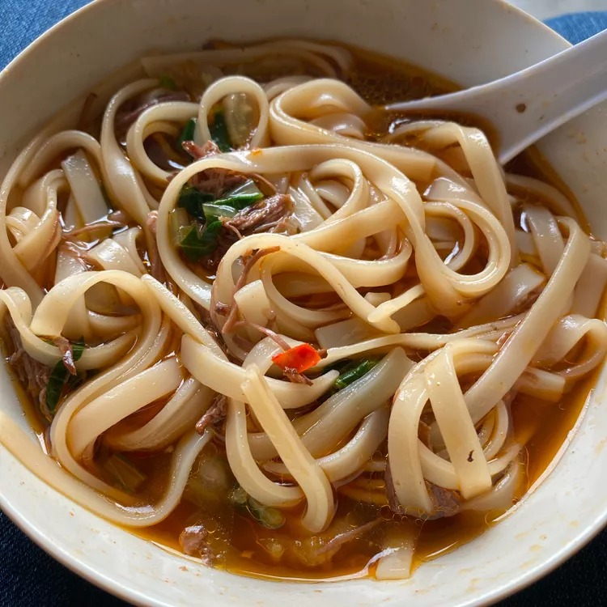

Taiwanese Spicy Beef Noodle Soup

This spicy beef noodle soup made in the slow cooker has tons of flavor — it's one of my all-time favorite noodle dishes! A bowl of this on a cold winter evening will warm you right up.
Ingredients:
- 2 pounds beef stew meat, cut into 1 inch cubes
- 3 tablespoons vegetable oil
- 14 ounce beef broth
- 1 bunch geen onions, ut into 2-inch pieces
- 1 cup soy sauce
- 10 clobes garlic, peeled
- 4 small chile peppers, halved and seeded
- 1 piece fresh ginger, peeled and cut into 5 pieces
- 2 tablespoons chile paste
- 3 star anise pods
- 1 teaspoon five-spice powder
- 4 small heads baby bok choy
- 1 package udon noodles
- 8 cups water
Instructions:
- 1 tablespoon chopped pickled mustard greens, or to taste (Optional)Place beef in a stockpot and cover with water; bring to a boil. Remove from the heat and drain.
- Pour vegetable oil into a slow cooker; add beef, 8 cups water, broth, green onions, soy sauce, rice wine, brown sugar, garlic, chile peppers, chile paste, ginger, star anise, and five-spice powder. Cover and cook on Low for 8 to 9 hours.
- Transfer beef to a bowl with a slotted spoon. Strain broth into a bowl; discard solids. Return broth to the slow cooker; keep on Warm until needed.
- Bring a pot of water to a boil; add bok choy and cook for 30 seconds. Remove with a slotted spoon and run under cold water. Drain, then roughly chop.
- Add udon noodles to boiling water; cook until tender yet firm to the bite, about 4 minutes. Drain.
- Divide noodles among serving bowls and top with beef, bok choy, and hot broth. Garnish with mustard greens.